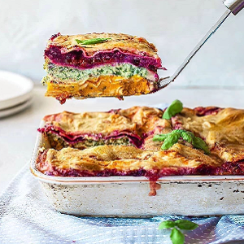

Ingredients
- 10 pieces wholemeal lasagna sheets
Pumpkin layer
- 1 brown onion, chopped roughly
- 3 cloves garlic, peeled
- 700g pumpkin, peeled and cut into small cubes
- 1 Tbsp sage
- 1 Tbsp rosemary
- Olive oil as needed
Beetroot layer
- 1 red onion, chopped roughly
- 1 medium beetroot, peeled and cut into small cubes
- Olive oil, as needed
'Ricotta' kale layer
- 1 brown onion, diced
- 3 cloves garlic, peeled
- 2 cups kale, packed
- 600g firm tofu
- 1/4 cup nutritional yeast
- 1/4 cup plant-based milk
- Olive oil, as needed
Tomato sauce
- 1 small brown onion, diced
- 2 cans diced tomatoes
- 1 Tbsp oregano
- Salt, as needed
Vegan bechamel sauce
- 1 cup milk, plus more if needed
- 1/4 cup flour
- 1/4 cup vegan cheese
- 1/4 cup nutritional yeast
- Salt, as needed
Instructions
- Preheat the oven to 180°C.
- Pumpkin layer: Add all ingredients to a baking tray and toss until combined. Bake for 20-30 min or
until everything is tender. When slightly cooled, add all ingredients to a food processor. Process
until smooth and and water if the mixture is too thick. Set aside.
- Beetroot layer (repeat step 2 but for the beetroot ingredients)
- 'Ricotta' kale layer: Saute the onion and oil in a large saucepan. When translucent, add the garlic
and kale. Add all ingredients to a food processor. Process until smooth. Set aside.
- Tomato sauce: Saute the onion and oil in a large saucepan. When translucent, add the rest of the
ingredients to the pan. Simmer until thick. Set aside.
- Bechamel sauce: Add all ingredients to a small pot on high heat and whisk for 5-10 minutes until
there are no lumps and it thickens. Set aside.
- Assemble: In a deep casserole dish, layer all the all the fillings and lasagna sheets as desired.
Bake for 30 minutes and serve.
Source Here